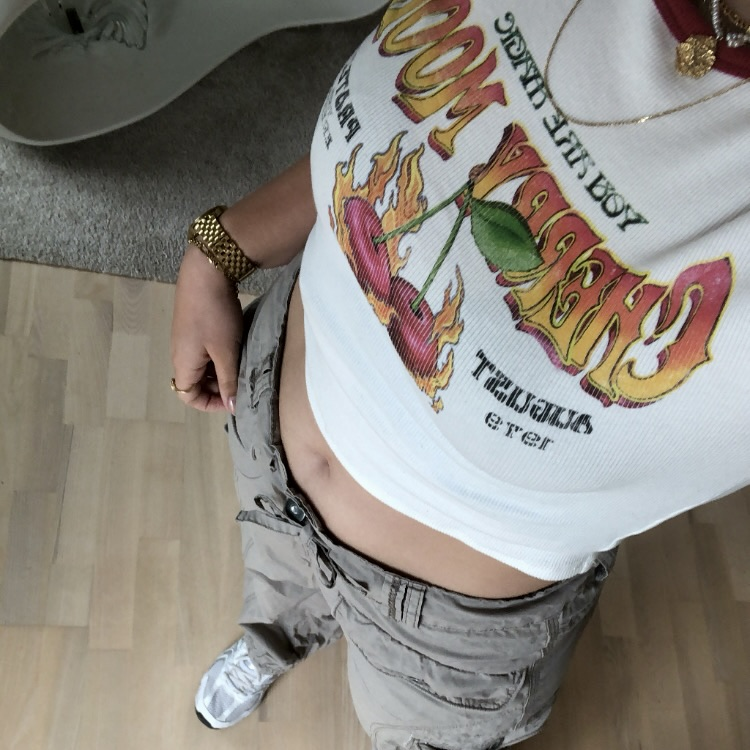
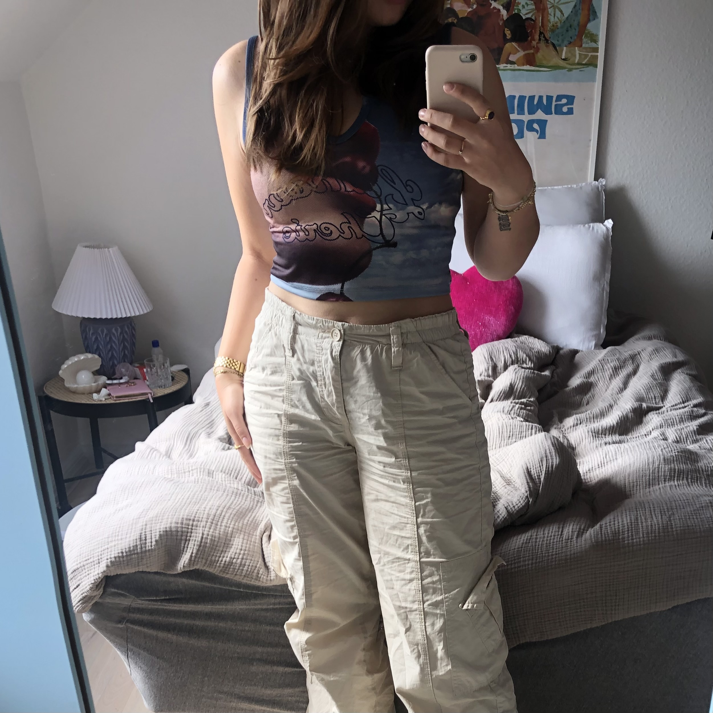
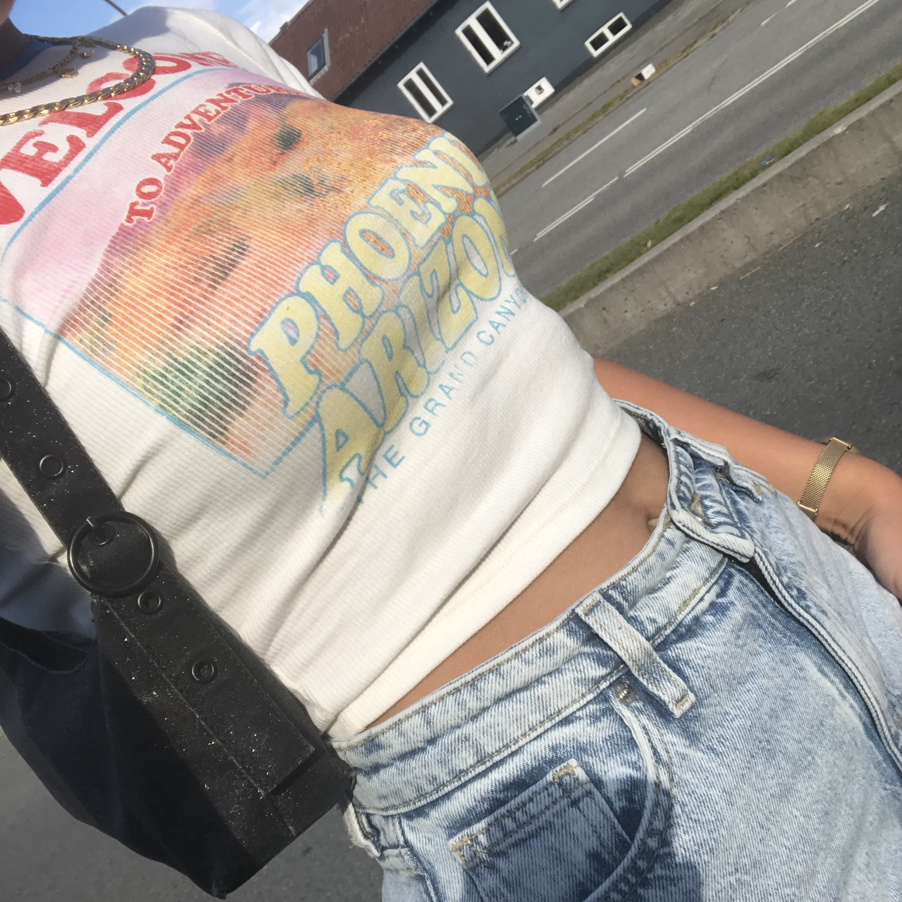
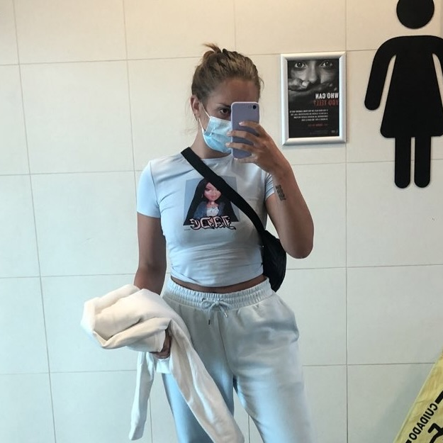
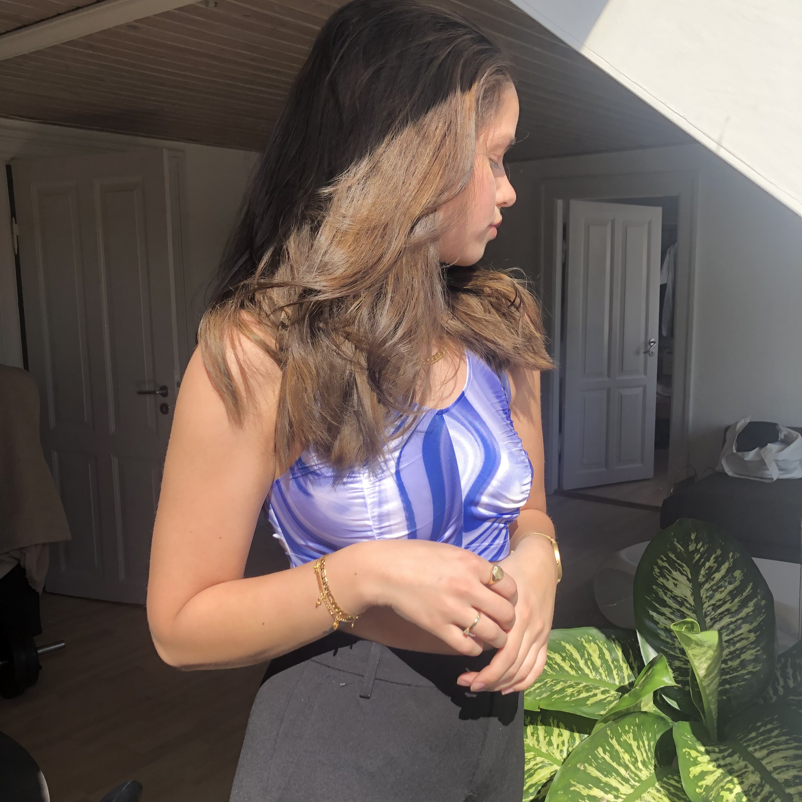

5 fede graffiske
croptops til
dig!
Du mangler helt sikkert disse lækre croptops med fedt print i din garderobe.
Croptoppen er en vigtig del af din Y2K garderobe - især med et fedt print! Den er let at inkorporere i din garderobe, hvis du gerne vil give din garderobe en Y2K-opdatering. Du kan sagtens finde en masse fede croptops til en overkommelig pris. De kan styles med det meste - style dem gerne med miniskirts, lavtaljede bukser eller sammen med et tracksuit. Her kommer vi med 4 budgetvenlige bud på croptops og en lidt dyrere mulighed.

Bershka 100 kr

Urban Outfitters 100 kr

Pull and Bear 85 kr

Bershka 80 kr

Hosbjerg 400 kr